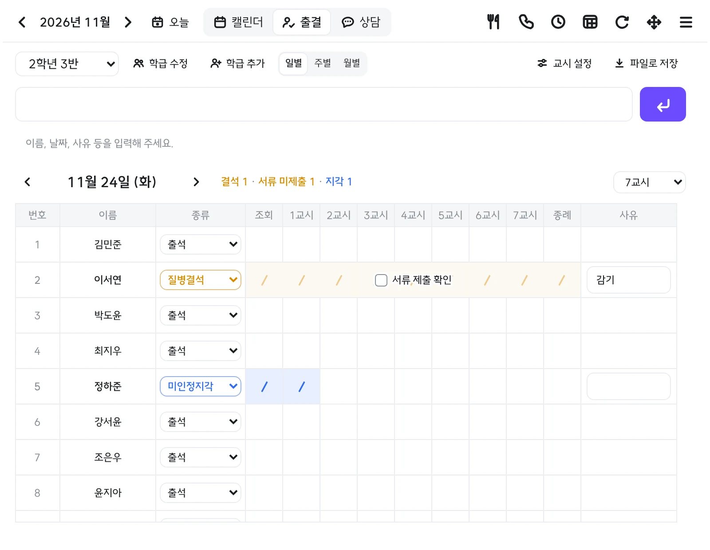

출결은 문장 한 줄이면 돼요
평소 말하듯 적으면 날짜, 종류, 교시, 사유를 알아서 나눠 기록해요. 인터넷이 없어도 바로 돼요. 아래에 직접 적어 보세요.
실제 앱에서는 여기서 엔터를 누르면 그날 출결표에 바로 기록돼요. 학생 이름 대신 번호로 적어도 돼요.
교무수첩에 적던 일을 한 화면에서
캘린더
날짜 칸을 두 번 누르면 바로 적어요. 엔터로 다음 줄, 다 적었으면 바깥을 누르면 끝이에요.
- 완료 표시, 글자색·배경색, 매일·매주·매달·매년 반복
- 공휴일과 대체공휴일, 음력과 24절기를 날짜 칸에 함께
- 기말고사 같은 날은 D-day로 아래에 띄워 두기
- 정해 둔 시간에 윈도우 알림

출결
일별로 교시마다 빗금이 쳐지고, 주별·월별 표로 한눈에 봐요. 고칠 게 있으면 표에서 바로 바꿔요.
- 질병·미인정·기타·출석인정 × 결석·지각·조퇴·결과
- 서류 제출 확인, 요일별 교시 수와 단축수업 날
- 한 달 기록을 엑셀 파일로 저장

상담 일정
상담 가능한 날짜와 시간을 표로 만들고, 링크를 보내면 학생과 학부모가 빈 시간을 골라 신청해요. 신청한 내용은 바로 내 표에 들어와요.
바탕화면 위젯
투명도를 정해 바탕화면에 붙여 두고, 다른 창 아래나 위에 둘 수 있어요. 급식, 연락처, 일과 시간표, 내 시간표는 위쪽 버튼 하나로 열어요.
가볍고 빠르게 만들었어요
할 일 적기도, 출결 기록도, 메뉴를 몇 번씩 거치지 않게 짰어요.
구글로 로그인하면 내 계정에만 저장되고, 학교 PC와 집 PC, 폰에서 똑같이 보여요.
"이 기기에만 저장"을 고르면 이 컴퓨터에만 기록돼요. 나중에 로그인하면 옮겨 줘요.
내려받기
어디서 쓰든 같은 구글 계정으로 로그인하면 기록이 이어져요.
Windows 컴퓨터
바탕화면 위젯으로 써요. 앱 화면은 인터넷으로 늘 최신 상태가 유지돼서, 수정될 때마다 다시 설치하지 않아도 돼요.
처음 실행할 때 "Windows의 PC 보호" 창이 뜨면 추가 정보를 누른 뒤 실행을 누르세요. 서명 비용이 드는 인증서를 쓰지 않아서 뜨는 안내예요.
폰·태블릿
앱 스토어 없이 홈 화면에 추가해서 앱처럼 써요.
안드로이드 (크롬)
- 크롬에서 iruroda.github.io/hagisiro/app을 열어요
- 오른쪽 위 ⋮ 메뉴에서 앱 설치를 눌러요
아이폰·아이패드 (사파리)
- 사파리에서 같은 주소를 열어요
- 공유 버튼을 누르고 홈 화면에 추가를 눌러요
설치 없이 웹에서
학교 공용 PC처럼 아무것도 깔 수 없을 때는 브라우저에서 바로 열어요.